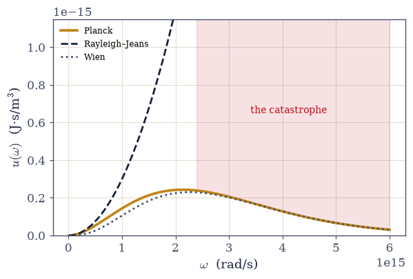
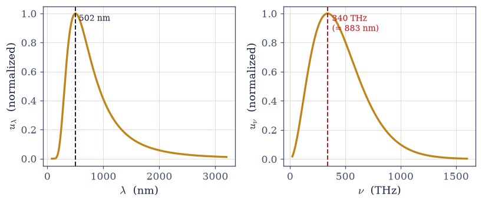
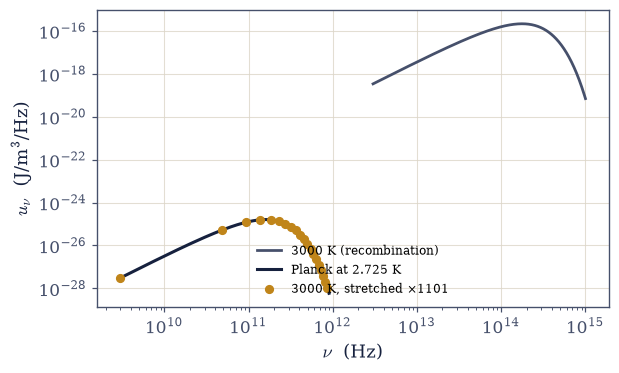
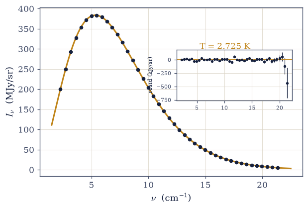
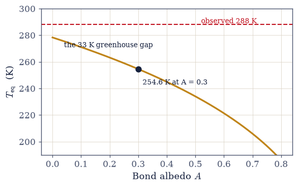

7.14 The Photon Gas and Planck’s Law#
Notebook overview#
Movement IV opens where quantum theory itself opened. In 1900 the classical theory of radiation was failing in public: equipartition (Volume V’s own theorem, correct within its hypotheses) assigns \(k_BT\) to every mode of the electromagnetic field, the field has infinitely many modes, and the predicted energy density of a warm cavity diverges. This ultraviolet catastrophe is the failure the whole volume has been walking toward, and this notebook finally stands at the spot. In the manner §7.13 made standard, the point is that every tool needed to fix it is now second-hand: each electromagnetic mode is the harmonic oscillator of §7.5; the \(\omega^2\) mode counting is the density of states of §7.3; the occupation is the Bose function of §7.7 with \(\mu = 0\), and the \(\mu = 0\) is not an assumption but the forward flag of §7.7, argued in full here (photon number is unconserved, so \(F\) minimizes over \(N\) itself); and the integral that turns Planck’s law into the \(T^4\) law is the \(\pi^4/15\) of §7.3, computed there before the physics that needed it existed. Planck’s law costs this volume one line of assembly, because three earlier notebooks each supplied a third.
What the assembled law delivers is out of proportion to that one line. Stefan–Boltzmann
gives \(\sigma = 5.670374\times10^{-8}\ \text{W/m}^2\text{K}^4\) from constants alone (exact, in
fact, in the 2019 SI), and with it the Sun submits to two numbers and a law:
\(L = 3.8280\times10^{26}\) W against the measured \(3.828\times10^{26}\), and the solar constant
\(1361\ \text{W/m}^2\) at one astronomical unit. Wien displacement arrives with its classic
gotcha taught in full: maximizing \(u_\lambda\) and maximizing \(u_\nu\) give different roots (\(x^* = 4.9651\) versus \(2.8214\)), so the wavelength peak and the frequency peak are different photons (for the Sun, 502 nm versus 880 nm), because a spectral density’s maximum depends on
the variable it is a density in. Photon thermodynamics ties the movement backward
(\(P = u/3\) is the ultrarelativistic relation of §7.11 at \(\mu = 0\): the kinematics that doomed the
white dwarfs, now holding starlight) and forward: the adiabat \(TV^{1/3} = \text{const}\) is why
cosmic expansion cools the blackbody while preserving its Planck shape exactly. Which is why
the data jewel exists at all: the cosmic microwave background, 3000 K light from
recombination stretched a thousandfold into a 2.725 K spectrum, measured by COBE/FIRAS as the
most perfect blackbody ever recorded. The actual FIRAS monopole table (Fixsen et al. 1996) is
embedded and fit with scipy.optimize.curve_fit over the single parameter \(T\) — after the fit
machinery is certified on the canonical peak and on synthetic data — recovering \(T = 2.725\) K
with residuals at parts in \(10^4\) of the peak. Along the way a numerical trap is taught with
relish, because verification actually hit it: quad on the dimensional Planck integrand
returns an answer thirty-seven orders of magnitude wrong, with no warning; scaled to
order one it is exact to ten digits. The stretch balances a planet, and the 33 K it cannot
explain has a name.
Conventions (this notebook). SI units throughout; CODATA/IAU constants in Setup (\(h\), \(c\), \(k_B\) exact by definition since 2019). The spectral bookkeeping is spelled out because it is this notebook’s own gotcha: \(u(\omega)\), \(u(\nu)\), and \(u(\lambda)\) are densities in different variables, related by Jacobians, and their peaks differ. Every Planck denominator uses
numpy.expm1(the standing rule of §7.5);scipy.integrate.quadis applied only to nondimensionalized integrands (the trap demonstrated once, then the rule); both Wien roots come fromscipy.optimize.brentqwith their transcendental equations stated; the FIRAS fit usesscipy.optimize.curve_fitwithp0stated and the covariance read. Unit conversions happen at single stated points: cm⁻¹ → Hz by one factor of \(100c\), and W m⁻² Hz⁻¹ sr⁻¹ → MJy/sr insideB_nu_MJyalone (1 Jy = \(10^{-26}\) W m⁻² Hz⁻¹).How to read the checks. Each exercise closes with a
validatecall against an independent fact: the Rayleigh–Jeans and Wien limits against Planck at stated \(\hbar\omega/ k_BT\); \(\sigma\) against its SI-exact value to eight digits; the Sun against its measured luminosity; both Wien constants against CODATA; the photon count against the canonical 411 cm⁻³; the Planck-in-MJy/sr function against the canonical CMB peak before any fitting; the fit procedure against synthetic data of known temperature; and the dimensional-quad failure gated as being wrong by more than thirty orders. A ✓ is strong evidence; a ✗ is a prompt to locate the discrepancy.Scope. The greenhouse gap is named and pointed outward (climate physics cited, not developed); CMB anisotropies, stellar atmospheres, and opacity are named horizons. See Planck (1900, 1901); Fixsen et al. 1996, ApJ 473, 576 (the FIRAS monopole, Table 4); Pathria & Beale (Ch. 7); Kardar (Ch. 7). Cross-reference §7.5 (the oscillator per mode;
expm1), §7.7 (\(\mu = 0\), flagged there, argued here), §7.3 (three invocations: the mode count, \(\pi^4/15\), \(\zeta(3)\)), §7.11 (\(P = u/3\)), §5.5 (equipartition, the honest villain), §7.13 (unit discipline, inherited), and forward to §7.15 (Einstein’s A and B), §7.16 (phonons), §7.17 (BEC).
Theory in brief#
The catastrophe, exhibited#
A cavity’s electromagnetic field decomposes into normal modes; the counting of §7.3 (re-derived below in two lines, two polarizations included) gives the mode density \(g(\omega) = V\omega^2/\pi^2c^3\). Volume V’s equipartition (§5.5) assigns each mode \(k_BT\), so
This is the Rayleigh–Jeans law, and it is not a wrong guess: it is the correct low-frequency limit of the true law (Planck/RJ = 0.995 at \(\hbar\omega/k_BT = 0.01\), verified below). Its integral is the catastrophe: every cavity should contain infinite energy, mostly at ultraviolet and shorter wavelengths. This was Kelvin’s second “cloud” over 1900 physics, and it was not a technicality: equipartition is a theorem, the mode count is geometry, and together they are wrong about every glowing object in the universe. Wien had guessed an empirical exponential that captured the high-frequency tail; what nobody had was a reason.
μ = 0, argued in full#
Photon number is not conserved: cavity walls absorb and emit freely, so \(N\) is not a constraint but an internal variable. Equilibrium minimizes \(F(T, V, N)\) over \(N\) itself,
which is exactly the definition of the chemical potential (the lineage of §7.4) evaluated at the free minimum. This is the argument §7.7 flagged forward and this notebook supplies in full. It also kills something: with no protected number there is no filling constraint to force condensation, so a black cavity has no photon BEC; the ceiling physics of §7.17 requires a conserved boson number. (Dye-filled microcavities engineer an effectively conserved photon number and do condense: one breath, outward.)
Planck’s law from second-hand parts#
Each mode of frequency \(\omega\) is a harmonic oscillator, literally: the field’s normal-mode coordinates obey the Hamiltonian of §7.5. Its thermal occupation is the Bose function of §7.7 at \(\mu = 0\), \(n_B = 1/(e^{\hbar\omega/k_BT} - 1)\). Multiply occupation, energy per photon, and the mode density of §7.3:
Planck’s law — with numpy.expm1 in the denominator, the standing rule of §7.5 against
catastrophic cancellation at \(\hbar\omega \ll k_BT\). The limits close the history: for
\(x = \hbar\omega/k_BT \to 0\) the occupation is \(k_BT/\hbar\omega\) and Rayleigh–Jeans emerges
(ratios 0.995, 0.951, 0.582, 0.034 at \(x = 0.01, 0.1, 1, 5\), verified); for \(x \gg 1\) Wien’s
exponential appears with its reason attached. Planck found this expression in October 1900 by
interpolating between the two limits, and spent the next months deriving it by an assumption
he later called “an act of desperation”: energy exchanged in quanta \(\hbar\omega\). The volume
assembles the same law in one line because §7.5, §7.7, and §7.3 each supplied a part.
Stefan–Boltzmann, and the Sun weighed#
Integrate Eq. 764 with the substitution \(x = \hbar\omega/k_BT\):
where the \(\int_0^\infty x^3\,dx/(e^x - 1) = \pi^4/15\) is the Bose integral of §7.3, invoked rather than re-derived. In the 2019 SI, \(h\), \(c\), and \(k_B\) are defined constants, so \(\sigma\) is now exact, a combination of definitions rather than a measured quantity (verified to eight digits below). The Sun then submits to the formula: with the IAU \(T_{\text{eff}} = 5772\) K and \(R_\odot = 6.957\times10^8\) m, \(L = 4\pi R_\odot^2\sigma T^4 = 3.8280\times10^{26}\) W against the measured \(3.828\times10^{26}\), and the flux at one astronomical unit is the solar constant, \(1361\ \text{W/m}^2\). The honest note: \(T_{\text{eff}}\) means “the temperature a blackbody of the Sun’s size and luminosity would have”; the real photosphere is layered, and the match is partly definitional; the non-trivial content is that one temperature describes the spectrum’s shape as well as its total.
The taught trap: quad meets Planck#
The trap is sprung deliberately: we hand scipy.integrate.quad the dimensional Planck
integrand Eq. 764 over \((0, \infty)\), exactly as a first instinct would, and
compare its report against the Stefan–Boltzmann value the integral provably equals:
Thirty-seven orders of magnitude wrong, and silently: no warning is raised (verified below). The adaptive sampler probes the transformed infinite interval at points that all miss the integrand’s support near \(\omega \sim 2\times10^{15}\) rad/s, concludes the function is essentially zero, and reports success. Nondimensionalize (\(x = \hbar\omega/k_BT\)) and the same machine returns \(\pi^4/15\) to ten digits. Stated as a standing rule of the course: quad meets physics only after the physics has been scaled to order one — a wrong answer with no warning is the most dangerous kind.
Wien displacement: which peak?#
Maximize the wavelength density \(u_\lambda \propto x^5/(e^x - 1)\) and the frequency density \(u_\nu \propto x^3/(e^x - 1)\) (both with \(x = hc/\lambda k_BT = h\nu/k_BT\)):
giving \(\lambda_{\max}T = b = 2.8978\) mm·K (CODATA: 2.897772) and \(\nu_{\max}/T = 58.79\) GHz/K. The gotcha, taught in full: these are different photons (for the Sun, \(\lambda_{\max} = 502\) nm while \(c/\nu_{\max} \approx 880\) nm), because a density’s maximum depends on the variable it is a density in: \(u_\lambda = u_\nu\,|d\nu/d\lambda|\), and the Jacobian \(c/\lambda^2\) reshapes the curve. Neither peak is “the” peak; each answers a different question (energy per unit wavelength versus per unit frequency). This Jacobian moral will matter in every spectroscopy the reader ever does. The evolutionary aside, one sentence: 502 nm is blue-green, the band into which daylight vision evolved.
Photon thermodynamics: pressure, entropy, expansion#
The assembled gas is a complete thermodynamic system, and standard machinery reads off its state functions: integrating the occupation over the mode count gives the photon number, while kinetic theory and the free energy deliver pressure and entropy (Pathria & Beale, Ch. 7, runs the full derivations):
The number density is the \(\zeta(3)\) integral of §7.3. The pressure is the ultrarelativistic relation of §7.11 (momentum flux for particles with \(\varepsilon = pc\) gives \(P = u/3\) regardless of statistics), now at \(\mu = 0\): the same \(4/3\)-polytrope kinematics that doomed the white dwarfs holds starlight. The adiabat explains the sky: in an expanding universe every mode’s wavelength stretches as the scale factor \(a(t)\) while the occupation of each comoving mode is preserved, so a Planck spectrum maps onto a Planck spectrum with \(T \propto 1/a\): expansion cools the blackbody without deforming it (demonstrated numerically below, and the reason the next item exists).
The jewel: FIRAS#
A spectrometer pointed at the sky measures not the energy density \(u\) but the specific intensity, energy per unit frequency and solid angle; converting Eq. 764 to those variables (a Jacobian plus a factor \(c/4\pi\)) gives the brightness against which the cosmos is tested:
fit to the actual COBE/FIRAS monopole spectrum: 3000 K light from recombination, stretched by
\(\sim\)1100 into the most perfect blackbody ever recorded. The notebook embeds the monopole
table (Fixsen et al. 1996, Table 4; 43 points, 2.27–21.33 cm⁻¹, MJy/sr) and fits the single
parameter \(T\) with scipy.optimize.curve_fit, the procedure certified first against the canonical peak (160.2 GHz, 383.9 MJy/sr) and on synthetic data of known temperature. The
cosmic bookkeeping read out: \(n_\gamma = 411\) photons/cm³, everywhere, including the room the
reader sits in; and against the baryon density this is \(\sim1.6\times10^9\) photons per baryon
— cosmology’s great dimensionless number. The universe is, by count, almost entirely thermal
light.
The stretch: a planet in the balance#
A planet in steady state radiates exactly what it absorbs: it intercepts sunlight over its disc \(\pi R_E^2\), reflects the fraction \(A\) (the albedo), and reradiates thermally over its entire surface \(4\pi R_E^2\). Setting absorption against Stefan–Boltzmann emission,
which evaluates to 278.3 K for a black Earth and 254.6 K at the observed albedo \(A = 0.3\). The observed mean surface temperature is 288 K, and the 33 K difference is the greenhouse effect: the atmosphere passes sunlight in the visible and absorbs the planet’s own infrared — a frequency-selective blanket, named here and pointed outward.
Setup#
Data and comparators only: the exact SI-2019 constants, the IAU solar values, the embedded COBE/FIRAS monopole table, and Wien’s 1896 empirical exponential (a historical comparator, not anyone’s lesson). Every law this notebook is about — Rayleigh–Jeans, Planck’s interpolation, σ from constants, the Wien roots, the photon count, the FIRAS-unit brightness, the planetary balance — you build in the exercise where it is earned.
The Setup below holds this notebook’s data and instruments — nothing you are asked to build. It is collapsed so the building stays yours; expand it whenever you want the details.
FIRAS monopole table loaded: 43 points, 2.27–21.33 cm^-1
Exercise 1 — The catastrophe, exhibited#
Equipartition meets an infinity of modes: the failure that started everything, derived honestly. Cite Eq. 762.
One point of order about the sequence below. Planck’s law Eq. 764 is coded in this exercise and only derived in the next one, which is the order in which physics acquired it: the interpolation was written down in October 1900 to fit the Berlin data, and the reason for it arrived in December. Wien’s 1896 exponential, the third curve in the figure, is a historical comparator and comes ready-made from the Setup.
Derive \(u_{\text{RJ}} = \omega^2k_BT/\pi^2c^3\) from Volume V equipartition (\(k_BT\) per mode, §5.5 invoked) on the mode count of §7.3 (re-derived in two lines, polarizations counted), and write it as
u_RJ(omega, T).Show the integral diverges (partial integrals to cutoff \(\Lambda\) growing as \(\Lambda^3\), exactly \(\times8\) per doubling) and verify Planck/RJ = 0.995 at \(\hbar\omega/k_BT = 0.01\): the classical law is the correct limit, not a wrong guess.
Write
u_planck(omega, T), Planck’s interpolation Eq. 764, withnumpy.expm1in the denominator (the standing rule of §7.5).Plot the founding figure: Planck, Rayleigh–Jeans, and Wien’s exponential at the solar \(T = 5772\) K, catastrophe region shaded.
Tell the history straight (prose): 1900, the crisis, Planck’s “act of desperation,” and the volume’s through-line: this notebook stands where “classical statistical mechanics failed” began.
the catastrophe, quantified: ∫_0^Λ u_RJ dω
Λ = 7.56e+15 rad/s: 4.310e+01 J/m^3
Λ = 1.51e+16 rad/s: 3.448e+02 J/m^3
Λ = 3.02e+16 rad/s: 2.759e+03 J/m^3
growth per doubling of Λ: [8. 8.] (Λ^3 → exactly 8)
Planck/RJ at ħω/k_BT = 0.01: 0.99501 — the classical law is the limit

Fig. 681 The founding figure of quantum theory, at the solar temperature \(T = 5772\) K. Rayleigh–Jeans (dark dashed) is Volume V equipartition on the mode count of §7.3 — the correct low-frequency limit (Planck/RJ = 0.995 at \(x = 0.01\)), and a catastrophe in integral: its \(\omega^2\) growth never turns over (shaded region — the ultraviolet catastrophe). Wien’s 1896 exponential (grey dotted) captures the high-frequency tail without a reason. Planck’s law (amber, Eq. 764) interpolates between them — the October 1900 guess that December 1900 derived, at the cost of the quantum. Every ingredient of the amber curve is second-hand in this volume: the oscillator of §7.5, the occupation of §7.7 at \(\mu = 0\), the mode count of §7.3.#
Validation 1#
✓ Rayleigh–Jeans is Planck's low-frequency limit — and its integral is the catastrophe [got 0.995008 vs expected 0.995 (rtol=0.001, atol=1e-09)]
✓ the divergence quantified: the classical energy grows as Λ^3, ×8 per doubling, without bound [max|Δ| = 0 (rtol=1e-09, atol=1e-09)]
True
Exercise 2 — μ = 0 argued in full, and Planck assembled from second-hand parts#
The volume’s economy on display: an oscillator, an occupation, a mode count. Cite Eq. 763, Eq. 764.
Make the \(\mu = 0\) argument in full: unconserved photon number \(\Rightarrow\) \(F\) minimized over \(N\) \(\Rightarrow\) \(\mu = 0\) (the argument §7.7 flagged forward, supplied here); note the consequence (no protected number, no cavity BEC; the dye-microcavity exception in one outward breath).
Assemble \(u(\omega,T) = (\hbar\omega^3/\pi^2c^3)/(e^{\hbar\omega/k_BT} - 1)\) from the oscillator occupation of §7.5 and the \(g(\omega)\) of §7.3 — the derivation the
u_planckyou wrote in Exercise 1 has been waiting for.Verify the two limits across \(\hbar\omega/k_BT = 0.01\)–\(5\) (ratios against Rayleigh–Jeans below; against Wien’s exponential above).
State the assembly’s meaning (prose): Planck’s law costs this volume one line because three earlier notebooks each supplied a third.
x = ħω/k_BT Planck/RJ Planck/Wien
0.01 0.9950 100.5008
0.10 0.9508 10.5083
1.00 0.5820 1.5820
5.00 0.0339 1.0068
Validation 2#
✓ Planck's law assembled, with the Rayleigh–Jeans limit verified across two decades [max|Δ| = 0.000166806 (rtol=0.02, atol=1e-09)]
✓ and the Wien limit verified above: the 1896 exponential, with its reason attached [got 1.00678 vs expected 1.0068 (rtol=0.001, atol=1e-09)]
True
Exercise 3 — Stefan–Boltzmann, and a trap worth thirty-seven orders of magnitude#
The \(T^4\) law from the integral of §7.3, the Sun weighed, and quad taught a lesson. Cite
Eq. 765, Eq. 766.
Demonstrate the trap:
quadon the dimensional Planck integrand over \((0, \infty)\) at \(T = 5772\) K returns \(\sim8\times10^{-38}\) — silently wrong by thirty-seven orders (the sampler never finds the peak at \(\omega \sim 2\times10^{15}\)); capture any warnings and show there are none; state the standing rule (nondimensionalize first).Integrate correctly in \(x = \hbar\omega/k_BT\): recover \(\int x^3/(e^x - 1) = \pi^4/15\) to ten digits (§7.3 invoked) and \(I/aT^4 = 1.0000000000\).
Compute \(\sigma = 2\pi^5k_B^4/15h^3c^2 = 5.670374\times10^{-8}\) W m⁻²K⁻⁴ from constants (SI-2019 exactness noted).
Weigh the Sun: \(L = 4\pi R_\odot^2\sigma T^4\) vs the measured \(3.828\times10^{26}\) W, and the solar constant at 1 AU — with the \(T_{\text{eff}}\) honesty note.
dimensional quad on (0, ∞): 8.235e-38 J/m^3 (its own error estimate: 1.6e-37)
the true aT^4: 0.8398 J/m^3
→ wrong by 37 orders of magnitude; warnings raised: 0
∫ x^3/(e^x−1) dx = 6.4939394023 (π^4/15 = 6.4939394023)
I/aT^4 = 1.0000000000 — the same machine, exact to ten digits once scaled
σ = 5.670374419e-08 W m^-2 K^-4 (exact by definition since 2019)
L = 4πR^2σT^4 = 3.8280e+26 W (measured: 3.828e26 W)
solar constant at 1 AU: 1361 W/m^2 (measured: 1361)
Validation 3#
✓ the trap is real: dimensional quad silently loses the Planck peak — scale to order one first [wrong by 37 orders, 0 warnings]
✓ the Bose integral of §7.3, re-verified where it is finally spent: π^4/15 to ten digits [got 6.49394 vs expected 6.49394 (rtol=1e-10, atol=1e-09)]
✓ the nondimensionalized route recovers aT^4 exactly [got 1 vs expected 1 (rtol=1e-10, atol=1e-09)]
✓ σ from constants to eight digits; the Sun weighed by a law; the solar constant at 1 AU [max|Δ| = 9.09672e+20 (rtol=0.001, atol=1e-09)]
True
Exercise 4 — Wien displacement: which peak?#
Two maximizations, two roots, two different photons: the gotcha every spectroscopist must survive once. Cite Eq. 767.
Maximize \(u_\lambda\): derive \(5(1 - e^{-x}) = x\), solve with
scipy.optimize.brentqon \([4, 6]\), and form \(b = hc/k_Bx^* = 2.8978\) mm·K vs CODATA 2.897772.Maximize \(u_\nu\): derive \(3(1 - e^{-x}) = x\) (
brentqon \([2, 4]\)), and form \(\nu_{\max}/T = 58.79\) GHz/K.Exhibit the gotcha: for the Sun, \(\lambda_{\max} = 502\) nm while \(c/\nu_{\max} \approx 880\) nm; plot \(u_\lambda\) and \(u_\nu\) side by side with both peaks marked, and state the Jacobian moral (a density’s peak lives in its variable).
One sentence each (prose): green-adapted eyes; and the CMB’s \(\nu_{\max} = 160.2\) GHz as the bridge to Exercise 6.
u_λ root: x* = 4.9651 → b = λ_max·T = 2.8978 mm·K (CODATA 2.897772)
u_ν root: x* = 2.8214 → ν_max/T = 58.79 GHz/K
the Sun, twice: λ_max = 502 nm; c/ν_max = 883 nm
CMB preview: ν_max(2.725 K) = 160.2 GHz — Exercise 6's peak, predicted

Fig. 682 Two correct peaks, two different photons. The solar Planck spectrum as a density in wavelength (left, \(u_\lambda \propto x^5/(e^x-1)\)) and in frequency (right, \(u_\nu \propto x^3/(e^x-1)\)), each with its maximum marked: \(\lambda_{\max} = 502\) nm (blue-green — the band daylight vision evolved into) versus \(\nu_{\max} = 340\) THz, i.e. \(c/\nu_{\max} = 883\) nm (near-infrared). Same physics, same photons, different densities: \(u_\lambda = u_\nu\,|d\nu/d\lambda|\), and the Jacobian \(c/\lambda^2\) moves the maximum (Eq. 767: roots 4.9651 vs 2.8214 of the two transcendental conditions, both by brentq). The moral — a density’s peak lives in its variable — recurs in every spectroscopy the reader will ever do.#
Validation 4#
✓ Wien twice: the peak depends on the plotting variable [max|Δ| = 3.93721e-05 (rtol=0.001, atol=1e-09)]
✓ and the wavelength constant lands on CODATA to the displayed digits [got 0.00289777 vs expected 0.00289777 (rtol=1e-05, atol=1e-09)]
True
Exercise 5 — Photon thermodynamics: pressure, entropy, and an expanding sky#
The gas’s mechanics, with the relation of §7.11 reappearing and the CMB’s survival explained. Cite Eq. 768.
Compute \(N/V = (2\zeta(3)/\pi^2)(k_BT/\hbar c)^3\) (the \(\zeta(3)\) of §7.3 invoked via
scipy.special.zeta) at 300 K (the room’s photon count) and 2.725 K (the canonical 411 cm⁻³).Derive \(P = u/3\) as the ultrarelativistic relation of §7.11 at \(\mu = 0\) (the kinematics that doomed the dwarfs, now holding starlight), and evaluate the CMB’s pressure.
Derive \(S = (4/3)aT^3V\) and the adiabat \(TV^{1/3} = \text{const}\); then demonstrate numerically that stretching every mode by \(s\) maps a 3000 K Planck spectrum exactly onto the Planck spectrum at \(3000/s\) K.
Read the consequence (prose): a 3000 K spectrum from recombination arrives, 13.8 Gyr later, as a 2.725 K spectrum, cooled \(\times\)1100 and deformed not at all, which is precisely why the next exercise can exist.
photons per cm^3 at 300 K (the room): 5.48e+08
photons per cm^3 at 2.725 K (the sky): 410.5
CMB energy density u = aT^4 = 4.17e-14 J/m^3; P = u/3 = 1.39e-14 Pa
stretch s = 1100.9: max |transformed/Planck(T/s) − 1| = 5.33e-15
Planck maps onto Planck — expansion cools the blackbody without deforming it

Fig. 683 Why the CMB is still a blackbody. The Planck spectrum at recombination (\(T = 3000\) K, dark, upper axis scale) and the same spectrum after every mode is stretched by \(s = 1101\) and diluted by \(s^3\) (amber points): the transformed curve lands exactly on the Planck spectrum at \(T/s = 2.725\) K (ink line beneath the points — maximum relative deviation \(10^{-15}\), machine level). Modes redshift together and occupations ride along, so expansion moves a blackbody down the temperature axis without deforming it (Eq. 768’s adiabat \(TV^{1/3}\) = const, enacted by the universe). Thirteen-point-eight billion years of this is why one parameter will fit the sky in the next exercise.#
Validation 5#
✓ 411 photons per cubic centimetre, everywhere [got 410.501 vs expected 410.7 (rtol=0.01, atol=1e-09)]
✓ the sky's pressure: u/3 by the ultrarelativistic kinematics of §7.11, at μ = 0 [got 1.39058e-14 vs expected 1.39e-14 (rtol=0.02, atol=1e-09)]
✓ Planck maps onto Planck under expansion: stretched 3000 K lands on 2.725 K at machine level [max deviation 5.3e-15]
True
Exercise 6 — The jewel: fitting FIRAS#
The most perfect blackbody ever measured, fit with one parameter. Cite Eq. 769.
Implement
B_nu_MJy(nu_Hz, T)(conversions at their single stated points) and certify it against the canonical CMB peak (160.2 GHz, 383.9 MJy/sr) before any fitting; then certify the fit procedure itself on synthetic data of known temperature with FIRAS-scale noise.Load the embedded FIRAS monopole table (Fixsen et al. 1996, Table 4; cm⁻¹ → Hz via the single conversion
CM1_TO_HZ) and fit \(T\) withscipy.optimize.curve_fit(p0 = 3.0,sigmafrom the table’s uncertainties,absolute_sigma=True).Report \(T\) and its covariance-derived uncertainty, and plot data-on-curve with the residuals (in kJy/sr, with error bars) in an inset.
Close the century (prose): from a desperate interpolation in Berlin to a sky-filling spectrum matching it at parts in \(10^4\); and the bookkeeping read out: photon-to-baryon \(\sim1.6\times10^9\), the universe as mostly thermal light.
B_ν(160.2 GHz, 2.725 K) = 383.7 MJy/sr (canonical: 383.9)
synthetic fit: input T = 2.72548, recovered 2.72546 ± 0.00001
FIRAS monopole fit: T = 2.72502 ± 0.00001 K (χ^2/dof = 1.07)
largest residual: 432 kJy/sr = 1126 ppm of the peak
photons per baryon: 411 / 2.47e-07 = 1.66e+09

Fig. 684 The most perfect blackbody ever measured. The 43 points of the COBE/FIRAS CMB monopole spectrum (Fixsen et al. 1996, Table 4; error bars are smaller than the markers everywhere) on the one-parameter Planck fit \(T = 2.725\) K (amber, Eq. 769), peaking at 383.9 MJy/sr at 160.2 GHz — the frequency Exercise 4’s Wien root predicted independently. Inset: the residuals in kJy/sr with their 1σ uncertainties: parts in \(10^4\) of the peak, without structure — light released at 3000 K, stretched a thousandfold across 13.8 Gyr, still agreeing with the formula Planck interpolated in October 1900. The fit machinery was certified on the canonical peak and on synthetic 50-ppm data before touching the sky.#
Validation 6#
✓ the FIRAS-unit Planck function certified on the canonical peak before any fitting [got 383.666 vs expected 383.9 (rtol=0.001, atol=1e-09)]
✓ the fit procedure certified: synthetic 50-ppm data returns its own temperature [got 2.72546 vs expected 2.72548 (rtol=1e-06, atol=0.0002)]
✓ FIRAS: the most perfect blackbody, one free parameter [got 2.72502 vs expected 2.725 (rtol=0.002, atol=1e-09)]
✓ cosmology's great dimensionless number: a billion and a half photons per baryon [got 1.66195e+09 vs expected 1.66e+09 (rtol=0.05, atol=1e-09)]
True
Exercise 7 — A planet in the balance#
Two applications of \(\sigma T^4\) and a 33-kelvin gap with a name. Cite Eq. 770.
Balance absorbed solar power \(\pi R_E^2(1 - A)S_0\) against radiated \(4\pi R_E^2\sigma T^4\) and derive \(T_{\text{eq}} = T_\odot\sqrt{R_\odot/2d}\,(1 - A)^{1/4}\) (the planet’s radius cancels).
Package the balance as
earth_equilibrium(albedo)and evaluate: 278.3 K at \(A = 0\) and 254.6 K at \(A = 0.3\).Compare with the observed mean 288 K and name the 33 K gap: the greenhouse effect as a frequency-selective blanket (one outward paragraph; climate physics cited, not developed).
Reflect (prose): the same law that weighed the Sun and fit the Big Bang’s afterglow also sets the temperature of home; three scales, one integral from §7.3.
T_eq(A = 0) = 278.3 K
T_eq(A = 0.3) = 254.6 K (the observed albedo)
observed mean surface temperature: 288 K → gap = 33.4 K

Fig. 685 A planet in the balance. Radiative-equilibrium temperature \(T_{\text{eq}}(A) = T_\odot\sqrt{R_\odot/2d}\,(1-A)^{1/4}\) against Bond albedo (amber, Eq. 770): 278.3 K for a black Earth, 254.6 K at the observed \(A = 0.3\) (marker). The observed mean surface temperature, 288 K (red dashed), sits 33 K above the equilibrium line — a gap no albedo can close (the curve only falls as \(A\) grows). That 33 K is the greenhouse effect: the atmosphere passes the Sun’s visible peak and absorbs the planet’s own 10 μm infrared — a frequency-selective blanket, named here and left to climate physics. The planet’s radius cancelled in the derivation: a pebble at 1 AU equilibrates to the same temperature.#
Validation 7#
✓ Earth's radiative equilibrium, black and real [max|Δ| = 0.0297441 (rtol=0.01, atol=1e-09)]
✓ and the named 33 K: the greenhouse gap between equilibrium and observation [gap = 33.4 K]
True
Exercise 8 — Where the story began, finished#
The volume opened by promising to revisit the place where classical statistical mechanics first broke in public, and this notebook kept that appointment with conspicuous economy. The catastrophe was real (equipartition is not wrong, only unbounded) and the cure cost one line, because §7.5 had already warmed the oscillator, §7.7 had already priced the occupation, and §7.3 had already counted the modes and done the integral. What the assembled law then delivered: the Sun weighed to its displayed digits, a constant of nature that the SI now defines rather than measures, a peak that splits in two under a change of variable, the pressure that doomed white dwarfs now holding starlight, and — stretched a thousandfold across the age of the universe — a spectrum whose fidelity to Planck’s form is measured in parts in ten thousand.
There is a fine irony in FIRAS. Planck introduced the quantum reluctantly, as a temporary expedient he hoped one day to retire; a century later, the single most precisely Planckian object ever observed is the universe itself. Nature not only kept the expedient — it built the sky out of it.
The movement now turns to the exchange: how matter talks to this gas (Einstein’s A and B coefficients, and the laser they seeded, §7.15), how a solid hums the same law (§7.16), and what happens when a boson gas whose number is conserved runs out of room (§7.17).
Notebook summary#
Movement IV’s opener: the volume’s origin story, told with the machinery to finish it.
The catastrophe Eq. 762: Rayleigh–Jeans derived honestly from the equipartition of §5.5 on the mode count of §7.3: the correct low-frequency limit (0.995 at \(x = 0.01\), gated) whose integral grows as \(\Lambda^3\) without bound (\(\times8\) per doubling, gated).
\(\mu = 0\) and the assembly Eq. 763, Eq. 764: unconserved number \(\Rightarrow\) \(\partial F/\partial N = 0\), the flag of §7.7 argued in full (and what it kills: no cavity BEC); Planck assembled from §7.5 + §7.7 + §7.3 in one line, both limits gated (0.995/0.951/0.582/0.034 against RJ; 1.0068 against Wien at \(x = 5\)).
Stefan–Boltzmann and the trap Eq. 765, Eq. 766: dimensional
quadreturns \(8\times10^{-38}\) against the true 0.84 J/m³ (thirty-seven orders, zero warnings, gated) while the nondimensionalized integral is exact to ten digits; \(\sigma = 5.670374\times10^{-8}\) from constants (SI-exact); the Sun at \(3.8280\times10^{26}\) W and 1361 W/m², gated.Wien, twice Eq. 767: \(x^* = 4.9651\) and \(2.8214\) by
brentq; \(b = 2.8978\) mm·K on CODATA; the Sun’s two peaks (502 vs 883 nm): a density’s maximum lives in its variable.Photon thermodynamics Eq. 768: 411 photons/cm³ (gated), \(P = u/3\) by the kinematics of §7.11 (\(1.4\times10^{-14}\) Pa for the sky), and Planck mapping onto Planck under expansion at machine level (gated): the CMB’s survival, demonstrated.
FIRAS Eq. 769: the embedded Fixsen et al. 1996 monopole table fit with one parameter, \(T = 2.725\) K, after the unit function was certified on the canonical peak (383.9 MJy/sr at 160.2 GHz, itself predicted by Exercise 4) and the procedure on synthetic 50-ppm data; residuals at parts in \(10^4\); \(1.7\times10^9\) photons per baryon.
The balance Eq. 770: 254.6 K at \(A = 0.3\) against the observed 288 K — the 33 K greenhouse gap, named and pointed outward.
Next door, matter and radiation negotiate: Einstein’s A and B.
Outlook#
Einstein’s A and B coefficients (§7.15). Matter in equilibrium with this gas: detailed balance, stimulated emission, and the laser’s seed.
Phonons (§7.16). The same counting in a crystal: Debye’s \(T^3\), and the sound-speed blackbody inside every solid.
BEC (§7.17). What \(\mu = 0\) forbids here becomes forced there: condensation when the boson number is conserved and the excited states saturate.
Outward horizons, named. The greenhouse problem in earnest (Pierrehumbert); stellar atmospheres and opacity; CMB anisotropies (the \(10^{-5}\) ripples on this notebook’s monopole) as the door to precision cosmology.
Cross-reference §7.3 (three invocations: modes, \(\pi^4/15\), \(\zeta(3)\)), §7.5 (the oscillator;
expm1), §7.7 (\(\mu = 0\), argued here), §7.11 (\(P = u/3\)), §5.5 (equipartition, the honest villain), §7.13 (unit discipline, inherited).